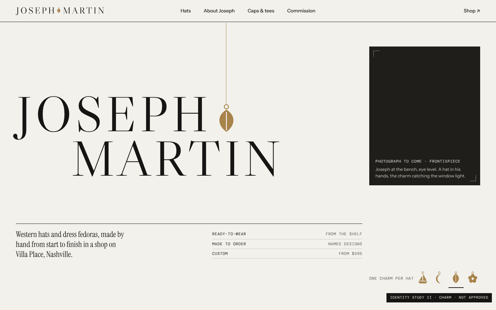
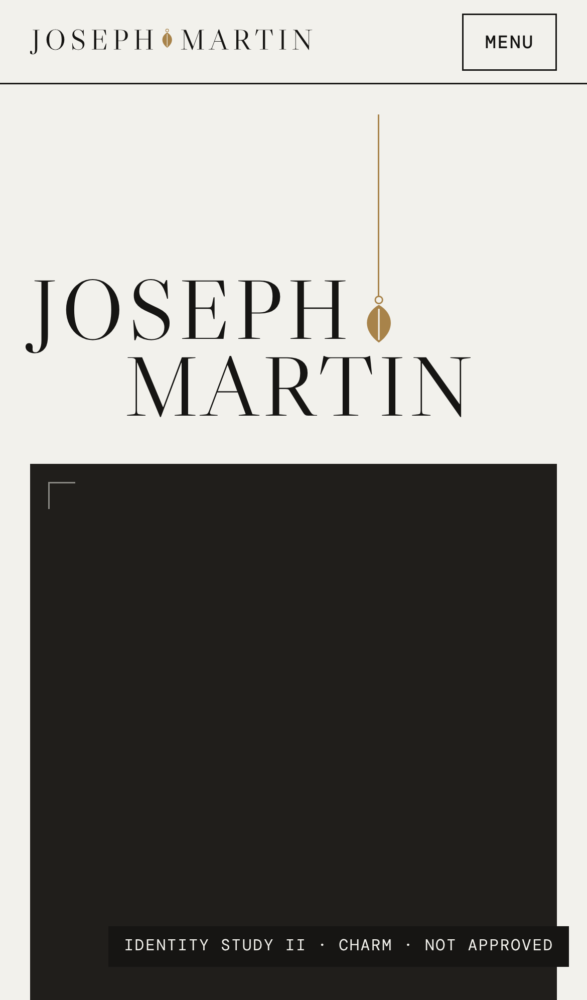

Three identities
The test is not whether it looks like a beautiful independent fashion brand. It is whether it could belong to Joseph Martin and no one else.
Each direction starts from something that is already Joseph’s: the stitching he is known for, the charms on his hats, and the mascot he already sells on caps and tees. Every mark is outlined from SIL OFL fonts in this repository; Cowboy George is the original line drawing, not a redraw.
Thread
The name, set wide, with one running stitch beneath it that starts in a knot and leaves a loose tail.
Charm
The name in Caslon capitals. Between the names hangs a gold charm, and the charm changes with the hat.
George
Cowboy George, the existing mascot, in red ink beside the name set like a maker’s stamp.


A gold thread drops from the header and the charm hangs after JOSEPH. Choose a hat and the charm changes. OpenThe idea is his, but the form is not. Swap in another hatmaker’s name and the stitched rule still works for any atelier or denim brand. Wide Archivo capitals are common in contemporary fashion.
Risk: generic. It becomes his only if he supplies his own signature to stitch.
The charm is the one detail that recurs on every hat, and the mark changes with the product: Oris is signed with a leaf, Ahab with a sailboat. No other hatmaker’s mark is built from his own hardware.
Risk: Caslon spaced capitals alone read as generic luxury. The charm carries the whole distinction, so it must be drawn from Joseph’s actual charms, not these stand-ins.
Unmistakably his: nobody else has George. It is already on his caps and tees, so it has already proved itself as merchandise.
Risk: George outranks Joseph. A dog with a cigarette sets the tone for a $1,795 commission, and the red ink pulls towards Western poster nostalgia.
Recommendation: II, Charm, as the house mark for hats, liners, labels and the website. Keep George in the role he already has: caps, tees, posters and the Music City Driving Club. Keep the stitch as a detail, not a logo. The charm drawings here are stand-ins drawn from text descriptions; the final charms must be traced from Joseph’s own.